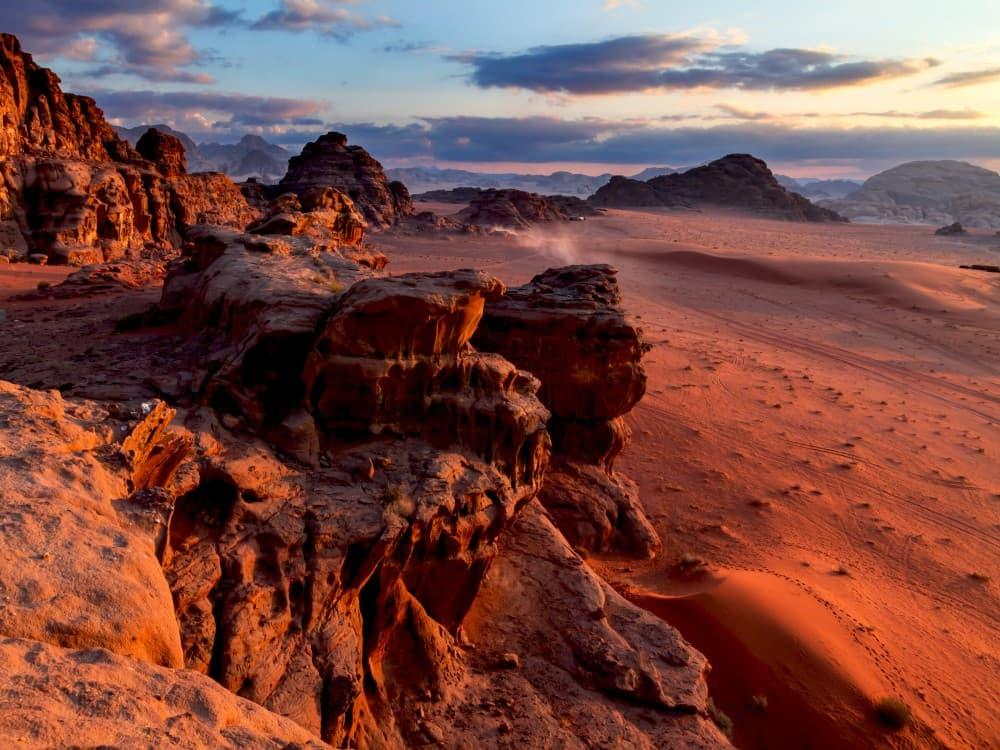

يُعد وادي رم من أجمل المناطق السياحية في الأردن، ويقع في جنوب المملكة. يتميز بالجبال الرملية الشاهقة والصخور الحمراء والصحراء الواسعة، لذلك يُطلق عليه اسم وادي القمر. ويستمتع الزوار بمشاهدة المناظر الطبيعية والتعرف على جمال الصحراء الأردنية.